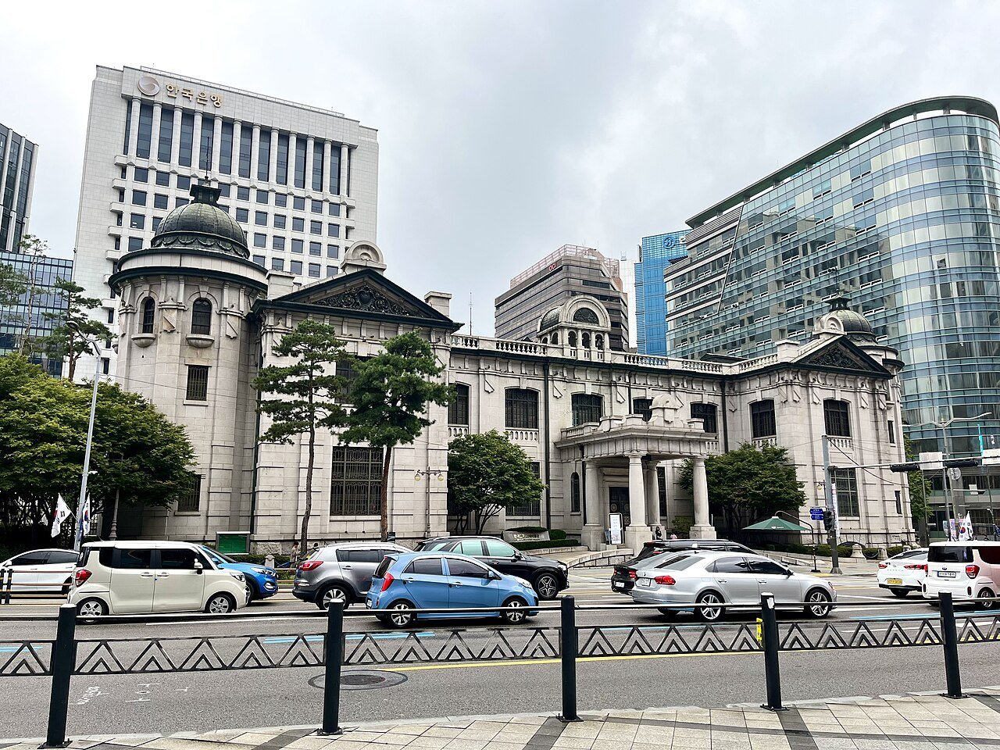
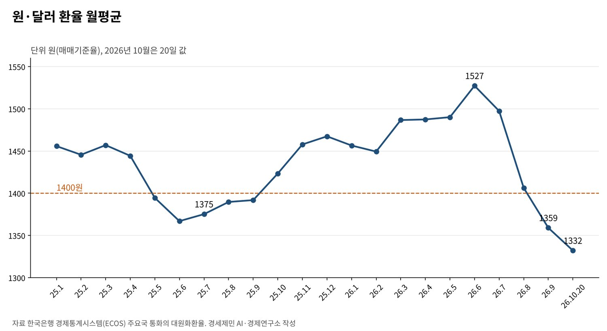
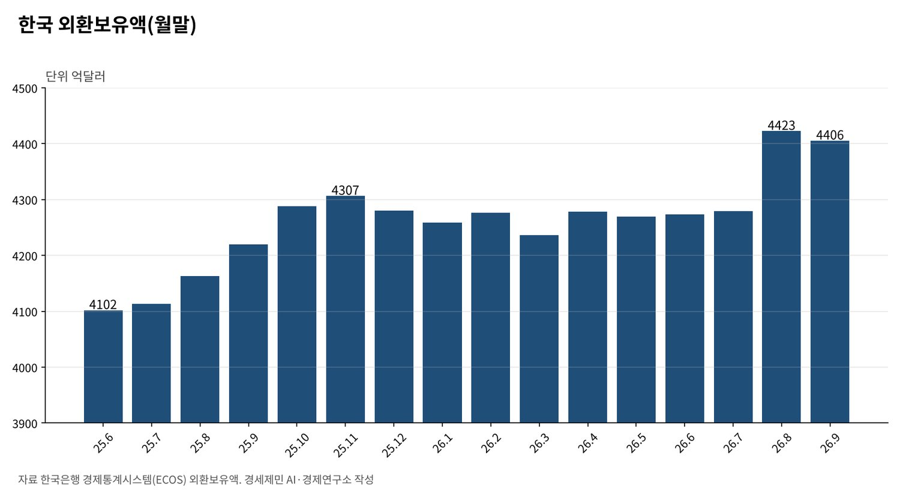

[트럼프 관세전쟁⑤] 한미 관세협상과 환율 방어
「1400원 방어」는 지켜지지 않았다, 원·달러 월평균 2025년 10월 1400원 넘어 2026년 6월 1527원
투자 납입은 한 해 200억달러로 묶었다, 외환보유액 4406억달러의 4.5%
한국은행 7·8월 금리 인상 뒤 환율 1332원, 관세와 환율은 같은 크기로 서로 지우지 않는다
2025년 7월 29일 원·달러 환율은 1379원60전(매매기준율)이었다. 관세협상 시한을 사흘 앞둔 때였다. 이 글은 1400원을 지키는 힘이 협상의 승부처가 될 수 있다고 봤다. 급한 쪽이 진다는 경고였다.
한 해가 지나 결과가 나왔다. 한국은행 자료로 원·달러 환율 월평균은 2025년 10월 1400원을 넘었고 2026년 6월 1527원까지 올랐다. 그 뒤 빠르게 내려 10월 20일 1332원10전이 됐다.
1400원 선은 지켜지지 않았지만 외환시장은 무너지지 않았다. 협상이 환율 위험을 어떻게 다뤘는지 한국은행 통계와 한미 공동 설명자료, 국제 연구로 따진다.
1. 1400원 위에서 보낸 열한 달
한국은행 경제통계시스템을 보면 원·달러 월평균은 2025년 7월 1375원이었다. 9월까지 1390원 안팎에 머물다 10월 1423원으로 1400원을 넘었다. 12월 1467원, 2026년 3월 1487원을 거쳐 6월 1527원에 이르렀다.

2025년 10월부터 2026년 8월까지 열한 달 동안 월평균이 1400원 위에 있었다. 2025년 7월보다 6월 환율은 11.1% 높다. 원화 가치가 그만큼 떨어졌다. 수출 기업에는 가격 경쟁력을, 수입 물가에는 부담을 남겼다.

7월부터 흐름이 바뀌었다. 월평균은 7월 1497원, 8월 1406원, 9월 1359원으로 내려갔다. 10월 20일 매매기준율은 1332원10전이다. 6월 정점보다 13% 가까이 낮다.
2. 투자 납입을 한 해 200억달러로 묶은 까닭
환율 위험은 협상 조건에 들어갔다. 두 정상은 2025년 10월 29일 경주 회담에서 3500억달러 가운데 2000억달러를 현금 투자로 하되 한 해 200억달러를 넘지 않게 했다. 한국 정부는 이를 외환시장 변동을 줄이는 장치로 설명했다.
미국 백악관이 11월 13일 낸 한미 공동 설명자료도 같은 내용을 적었다. 한국은 어느 해에도 200억달러가 넘는 금액을 낼 의무가 없다. 나머지 1500억달러는 한국 기업이 이끄는 조선 협력으로 채운다.
200억달러는 9월 말 외환보유액 4406억달러의 4.5%다. 한 번에 큰돈이 빠져나가면 외환시장이 흔들린다. 납입을 해마다 나눠 그 충격을 줄였다. 1호 사업인 텍사스 가스발전소 223억달러도 2032년 전면 가동을 목표로 나눠 집행한다.
3. 외환보유액과 금리, 방어의 두 축
한국은행 자료로 외환보유액은 2025년 6월 말 4102억달러였다. 환율이 1400원을 넘던 시기에도 4200억~4300억달러대를 지켰다. 2026년 8월 말 4423억달러로 늘었고 9월 말은 4406억달러다.

금리도 움직였다. 한국은행은 2026년 상반기 기준금리를 연 2.5%로 두다 7월 2.75%, 8월 3%로 올렸다. 미국 연방준비제도(연준)도 9월 16일 기준금리를 0.25%포인트 올려 연 3.75~4%로 했다.
한국은행이 금리를 올린 7~8월부터 환율이 내려갔다. 다만 금리 인상과 수출, 달러 흐름 가운데 무엇이 얼마나 작용했는지는 이 글이 가를 수 없다. 한국은행의 분석이 나와야 따질 수 있다.
4. 관세와 환율은 같은 크기로 서로 지우지 않는다
원래 글은 25% 관세가 원화를 25% 떨어뜨린 것과 같은 효과라고 썼다. 계산은 그렇게 맞아떨어지지 않는다. 관세는 수입 가격에 거의 다 실리지만 환율 변화는 그보다 덜 실린다.
미중 무역전쟁을 분석한 알베르토 카발로 등 연구진은 관세가 미국 수입업체가 내는 가격에 거의 다 전가됐다고 밝혔다. 같은 연구에서 환율에 따른 가격 반응은 훨씬 작았다. 중국 위안화 약세가 관세 부담을 덜어 주지 못했다는 뜻이다.
연준 이사회 연구진도 2026년 4월 연구에서 2025년 관세의 수입 가격 전가가 약 7개월 만에 거의 100%에 이르렀다고 추정했다. 원화가 약해져도 미국 수입업체가 내는 관세는 그대로다. 환율은 관세의 방패가 되기 어렵다.
5. 급한 쪽이 지는가
협상의 시간표는 결국 한국 국회와 미국 대통령이 정했다. 트럼프 대통령은 2026년 1월 26일 한국 국회가 합의를 이행하지 않는다며 관세를 25%로 올리겠다고 밝혔다. 국회는 3월 12일 대미투자특별법을 통과시켰다.
1월 월평균 1457원이던 환율은 법이 통과된 3월 1487원으로 올랐다. 특별법이 통과된 뒤에도 환율은 석 달 더 올랐다. 환율을 움직인 힘은 협상장 밖에도 있었다. 협상의 성패를 환율 한 숫자로 재기는 어렵다.
6. 남은 위험과 물어야 할 것
첫째, 투자 납입이 본격화한다. 1호 사업에 이어 원전과 알래스카 액화천연가스 사업이 검토 중이다. 해마다 달러가 빠져나가는 일정과 규모를 미리 공개해야 시장이 덜 흔들린다.
둘째, 미국 금리다. 연준이 9월 금리를 올렸다. 미국 금리가 더 오르면 달러가 강해지고 원화에 다시 압력이 생긴다. 한국은행이 미국과의 금리 차를 얼마나 감내할지가 변수다.
셋째, 새 관세다. 미국은 한국을 포함한 16개 경제권의 과잉생산 301조 조사를 진행 중이다. 관세가 15%를 넘으면 수출이 흔들리고 환율도 흔들린다. 상한을 문서로 확인하는 일이 환율 방어의 첫 단추다.
1400원은 숫자로는 무너졌지만 외환시장은 버텼다. 투자 납입에 상한을 둔 설계와 쌓아 둔 외환보유액이 그 버팀목이었다. 환율 방어는 하루의 개입이 아니라 협상 조건과 보유액, 금리를 함께 짜는 일이다.
참고문헌
기관 자료
- 한국은행 경제통계시스템(ECOS), 「주요국 통화의 대원화환율」 원/미국달러 매매기준율(월평균, 일별), 2026년 10월 21일 조회. https://ecos.bok.or.kr/api/StatisticSearch/sample/json/kr/1/10/731Y004/M/202604/202610/0000001/0000100
- 한국은행 경제통계시스템(ECOS), 「외환보유액」 합계(월말), 2026년 10월 21일 조회. https://ecos.bok.or.kr/api/StatisticSearch/sample/json/kr/1/10/732Y001/M/202604/202609/99
- 한국은행 경제통계시스템(ECOS), 「한국은행 기준금리」, 2026년 10월 21일 조회. https://ecos.bok.or.kr/api/StatisticSearch/sample/json/kr/1/10/722Y001/M/202601/202610/0101000
- 미국 백악관, 「Joint Fact Sheet on President Donald J. Trump's Meeting with President Lee Jae Myung」, 2025년 11월 13일. https://www.whitehouse.gov/fact-sheets/2025/11/joint-fact-sheet-on-president-donald-j-trumps-meeting-with-president-lee-jae-myung/
- 미국 연방준비제도, 「Federal Reserve issues FOMC statement」, 2026년 9월 16일. https://www.federalreserve.gov/newsevents/pressreleases/monetary20260916a.htm
- 미국 무역대표부(USTR), 「USTR Initiates Section 301 Investigations Relating to Structural Excess Capacity and Production in Manufacturing Sectors」, 2026년 3월 11일. https://ustr.gov/about/policy-offices/press-office/press-releases/2026/march/ustr-initiates-section-301-investigations-relating-structural-excess-capacity-and-production
연구 논문과 보고서
- Cavallo, A., Gopinath, G., Neiman, B., & Tang, J., "Tariff Pass-through at the Border and at the Store: Evidence from US Trade Policy", 『American Economic Review: Insights』, 2021년(NBER Working Paper 26396, 2019년 10월). https://www.nber.org/papers/w26396
- Minton, R., Ray, M., & Somale, M., "Detecting Tariff Effects on Consumer Prices in Real Time – Part II", FEDS Notes, 연준 이사회, 2026년 4월 8일. https://www.federalreserve.gov/econres/notes/feds-notes/detecting-tariff-effects-on-consumer-prices-in-real-time-part-II-20260408.html
언론 보도
- "South Korea reshapes Trump's $350 billion demand into phased investment plan", Korea Pro, 2025년 10월. https://koreapro.org/2025/10/south-korea-reshapes-trumps-350-billion-demand-into-phased-investment-plan/
- Kim Tong-Hyung, "South Korean lawmakers pass law to manage Seoul's pledge of $350 billion in US investments", AP, 2026년 3월 12일. https://www.clickondetroit.com/business/2026/03/12/south-korean-lawmakers-pass-law-to-manage-seouls-pledge-of-350-billion-in-us-investments/
- "Trump to hike tariffs on South Korean goods to 25%", Channels TV(로이터 전재), 2026년 1월 27일. https://www.channelstv.com/2026/01/27/trump-to-hike-tariffs-on-south-korean-goods-to-25/
- "對美 투자 1호 텍사스 가스복합화력…2·3호 원전·알래스카 LNG(종합)", 더팩트, 2026년 9월. https://news.tf.co.kr/read/economy/2368894.htm
- 장보인, 한미 전략투자 1호 사업 발표 보도, 연합뉴스(파이낸셜뉴스 전재), 2026년 10월 1일. https://www.fnnews.com/news/202610010607450693
[사진 출처]
- [사진1] ほっきー, "韓国銀行貨幤金融博物館 2023.jpg", 위키미디어 공용, CC0. https://commons.wikimedia.org/wiki/File:韓国銀行貨幤金融博物館_2023.jpg
※ 이 기사는 AI 프로그램 클로드를 활용해 작성했습니다.
관련기사
- [트럼프 관세전쟁①] 트럼프 관세압박, 미국이라고 다 유리할까
- [트럼프 관세전쟁②] 일본과 베트남은 왜 그래야만 했을까
- [트럼프 관세전쟁③] EU는 왜 어떻게 15%를 수용했나
- [트럼프 관세전쟁④] 「나머지는 15~20%」 발언과 한미 관세협상
저작권자 © AI경세제민 무단전재 및 재배포, AI학습 및 활용 금지